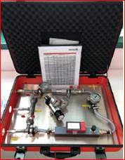

Trazador de fugas con gas Variotec 460 Tracer gas
Equipo de detección de fugas por medio de gas trazador .
Descripción
El Variotec® 460 Tracer Gas es un equipo profesional diseñado para la detección de fugas en redes de agua y sistemas presurizados mediante gas trazador. Utiliza una mezcla de 5 % de hidrógeno (H₂) y 95 % de nitrógeno (N₂), lo que permite localizar escapes con gran precisión incluso en instalaciones enterradas o de difícil acceso.
El hidrógeno posee una elevada velocidad molecular y muy baja viscosidad, lo que le permite atravesar diferentes materiales hasta alcanzar la superficie. Como este gas no se encuentra normalmente en el ambiente, cualquier detección corresponde con total seguridad al gas introducido en la instalación, evitando falsos positivos.
El equipo integra un sensor semiconductor de alta sensibilidad y un sensor de conductividad térmica capaces de medir concentraciones de hidrógeno desde niveles muy bajos hasta el 100 % de volumen. Gracias a su bomba interna con caudal de aspiración aproximado de 50 l/h, la detección de fugas resulta rápida y fiable.
El Variotec 460 dispone de pantalla LCD retroiluminada, controles mediante rueda de selección y teclas de función, así como un menú de navegación intuitivo que facilita su utilización en campo. Además permite registrar datos de medición y transferirlos posteriormente a un ordenador mediante conexión USB para la elaboración de informes técnicos.
El equipo funciona con cuatro baterías recargables NiMH o pilas alcalinas, proporcionando una autonomía mínima de 8 horas. Su diseño compacto y robusto cuenta con protección IP54, lo que garantiza un funcionamiento seguro en entornos de trabajo exigentes.
Especificaciones técnicas
| Tipo de detección | Gas trazador (5 % H₂ / 95 % N₂) |
| Sensores | Sensor semiconductor y sensor de conductividad térmica |
| Rango de medición | 0 ppm – 100 % Vol. de hidrógeno (según aplicación) |
| Caudal de aspiración de la bomba | Aprox. 50 l/h |
| Memoria de datos | 8 MB con transferencia a PC vía USB |
| Pantalla | LCD retroiluminada 320 × 240 píxeles |
| Alimentación | 4 baterías recargables NiMH o pilas alcalinas |
| Autonomía | Mínimo 8 horas |
| Tiempo de recarga | Aprox. 3 horas |
| Protección | IP54 |
| Dimensiones | 148 × 57 × 205 mm |
| Peso | Aprox. 1 kg |
| Temperatura de operación | -20 °C a +40 °C |
Imágenes del producto

Videos de funcionamiento
Documentación
Descargar la ficha técnica completa del instrumento.
Descargar ficha técnica (PDF)